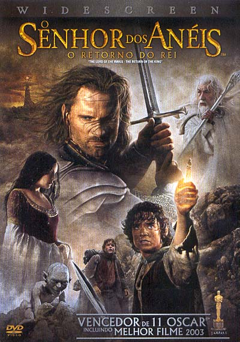

Os 10 melhores filmes de todos os tempos,segundo o IMDb.
Site especializado elenca os melhores filmes da história e separamos aqui as produções no topo.
1. Um Sonho de Liberdade (1994) – 9.3

Assista Aqui
“Um Sonho de Liberdade” (“The Shawshank Redemption” em inglês) é um filme de drama dirigido por Frank Darabont e baseado no conto “Rita Hayworth and Shawshank Redemption”, de Stephen King. A história se passa na fictícia prisão de Shawshank, e a trama é centrada em Andy Dufresne, interpretado por Tim Robbins, um banqueiro condenado injustamente por assassinar sua esposa e o amante dela.
2. O Poderoso Chefão (1972) – 9.2

Assista Aqui
“O Poderoso Chefão” (The Godfather) é um filme de crime e drama dirigido por Francis Ford Coppola. Baseado no romance homônimo de Mario Puzo, o filme é amplamente considerado uma obra-prima e uma das maiores realizações cinematográficas da história.
3.O Poderoso Chefão – Parte II (1974) – 9.0
Assista Aqui
“O Poderoso Chefão – Parte II” é considerado uma obra-prima do cinema.A história é contada
em duas linhas do tempo paralelas. A primeira continua a saga da família
Corleone, com Michael Corleone (interpretado por Al Pacino) assumindo o papel de líder. Michael
tenta expandir os negócios da família para a área de cassinos em Las Vegas, mas enfrenta
desafios e traições. Ao mesmo tempo, a história se aprofunda no passado de Vito, mostrando
como ele emigrou da Sicília para os Estados Unidos e construiu seu império criminal.
4. Batman: O Cavaleiro das Trevas (2008) – 9.0

Assista Aqui!
“Batman: O Cavaleiro das Trevas” (The Dark Knight) foi dirigido por Christopher Nolan e lançado em 2008. Este é o segundo filme da trilogia “O Cavaleiro das Trevas” de Nolan, que apresenta Christian Bale como Batman/Bruce Wayne.
5. 12 Homens e uma Sentença (1957) – 8.9
Assista Aqui
“12 Homens e uma Sentença” (12 Angry Men) é um filme de drama jurídico lançado em 1957, dirigido por Sidney Lumet e baseado em uma peça de Reginald Rose. O filme é aclamado por sua narrativa intensa e suas performances excepcionais.
6. A Lista de Schindler (1993) – 8.9
Assista Aqui
“A Lista de Schindler” (Schindler’s List) é um filme épico de drama e guerra, dirigido por Steven Spielberg. O filme é baseado no romance “Schindler’s Ark” de Thomas Keneally e conta a história real de Oskar Schindler, um empresário alemão que salvou a vida de mais de mil judeus durante o Holocausto.
7. O Senhor dos Anéis: O Retorno do Rei (2003) – 8.9
Assista Aqui
“O Senhor dos Anéis: O Retorno do Rei” (The Lord of the Rings: The Return of the King) é o terceiro filme da trilogia épica dirigida por Peter Jackson, baseada na obra de J.R.R. Tolkien. O filme conclui a saga que começou com “O Senhor dos Anéis: A Sociedade do Anel” e “O Senhor dos Anéis: As Duas Torres”.
8. Pulp Fiction: Tempo de Violência (1994) – 8.9

Assista Aqui
“Pulp Fiction: Tempo de Violência” (Pulp Fiction) é um filme dirigido por Quentin Tarantino, conhecido por sua narrativa não linear, diálogos afiados e uma trilha sonora marcante. filme apresenta uma série de histórias interligadas que envolvem personagens diversos e situações inusitadas em Los Angeles. A narrativa é não linear, o que significa que os eventos não são apresentados em uma ordem cronológica convencional.
9. O Bom, o Mau e o Feio (1966) – 8.8

Assista Aqui
“O Bom, o Mau e o Feio” (Il buono, il brutto, il cattivo) é um filme de faroeste spaghetti italiano dirigido por Sergio Leone e estrelado por Clint Eastwood, Lee Van Cleef e Eli Wallach. O filme é o terceiro da “Trilogia dos Dólares” de Leone, seguindo “Por um Punhado de Dólares” e “Por uns Dólares a Mais”.
10. Clube da Luta (1999) – 8.8
Assista Aqui!
“Clube da Luta” (Fight Club) é um filme de drama psicológico lançado em 1999, dirigido por David
Fincher e baseado no romance homônimo de Chuck Palahniuk.O filme segue um protagonista sem nome (interpretado por Edward Norton) que sofre de insônia
e está insatisfeito com sua vida superficial e materialista. Ele forma uma amizade com Tyler
Durden (interpretado por Brad Pitt), um vendedor de sabão com uma visão de mundo anarquista
e desafiadora
Melhores filmes de todos os tempos pelos espectadores!
Viste nosso site para mais filmes e séries